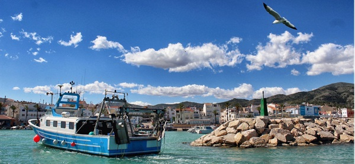

Los pueblos más bonitos
Los pueblos más bonitos

Les cases d'acanar es el último de la costa catalana hacia el sur.
Cuenta con una oferta gastronómica excelente y variada, con una playa que nunca se masifica y con el precioso Delta del Ebro a pocos pasos.
La primera línea de mar no se ha visto modificada y una de las mejores actividades que se pueden hacer es ir andando hasta la desembocadura del rí Sènia. En donde en otros pueblos hay hoteles, aquí encontramos hertos.Según MilViajes. "es uno de los pueblos más bonitos de Cataluña y de todo el Mediterráneo".